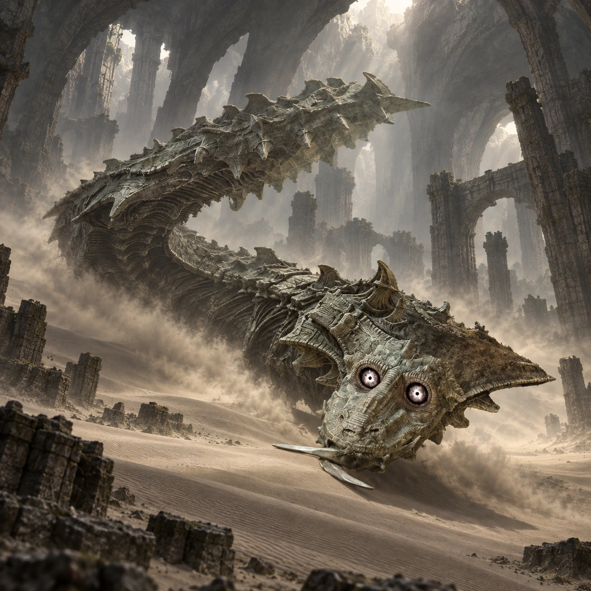

Dois nomes, duas origens
“Narga_A” é um nome de desenvolvimento. “Dirge” é o nome popular entre os fãs, não um nome próprio apresentado durante o jogo.

Colosso 10 · Terras Proibidas
Algo se aproxima sob a areia.
Dirge percorre o chão de uma grande caverna como se a areia fosse água. A perseguição transforma Wander e Agro em uma dupla inseparável.
Conheça o gigante01 / O gigante
Alongado e de olhos muito grandes, Dirge aparece em fragmentos acima da areia. A cabeça e partes do dorso revelam o movimento de um corpo que continua sob o chão.
A velocidade muda a sensação do encontro: o desafio deixa de ser apenas alcançar um gigante e passa a incluir manter distância enquanto se observa o que vem atrás.
*A medida indicada segue a estimativa da comunidade citada nas fontes. Os tamanhos variam entre fontes e escalas; esta é uma referência aproximada de comprimento, não uma medida oficial confirmada.
02 / O caminho
Viaje para oeste, passando pela região próxima à planície dos gêiseres. Continue entre as montanhas até encontrar a entrada da caverna.
Entre com Agro. O salão é amplo e tem o chão tomado por areia, com paredes e obstáculos que exigem atenção durante a cavalgada.
Abrir mapa das Terras Proibidas03 / Um olhar mais atento
“Narga_A” é um nome de desenvolvimento. “Dirge” é o nome popular entre os fãs, não um nome próprio apresentado durante o jogo.
O deslocamento de Dirge lembra o de uma criatura aquática, mas acontece sob o piso seco da caverna.
O encontro dá destaque à coordenação entre cavalgada e arco, em vez de começar com uma longa escalada.
04 / O encontro
Algumas pistas para começar, deixando a descoberta da luta com você.
Dicas gerais para o modo Normal. A ficha não detalha todos os pontos vitais nem o desfecho do confronto.
Ficha baseada em registros da comunidade e guias de jogo. A arte é uma interpretação visual, não uma captura do jogo.